11. VQ-VAE#
11.1. Importing libraries#
import torch
import torch.nn as nn
import torch.nn.functional as F
import torch.optim as optim
import torchvision
import torchvision.transforms as transforms
from torch.utils.data import DataLoader
import matplotlib.pyplot as plt
import numpy as np
import google.colab as colab
colab.drive.mount('/content/drive')
import warnings
warnings.filterwarnings("ignore", category=UserWarning, module='matplotlib')
warnings.filterwarnings("ignore")
DEVICE = "cuda" if torch.cuda.is_available() else "cpu"
Drive already mounted at /content/drive; to attempt to forcibly remount, call drive.mount("/content/drive", force_remount=True).
transform = transforms.Compose([
transforms.Resize((32, 32)),
transforms.ToTensor()
])
train_dataset = torchvision.datasets.MNIST(root='./data', train=True, download=True, transform=transform)
train_loader = DataLoader(train_dataset, batch_size=64, shuffle=True)
test_dataset = torchvision.datasets.MNIST(root='./data', train=False, download=True, transform=transform)
test_loader = DataLoader(test_dataset, batch_size=64, shuffle=False)
Downloading http://yann.lecun.com/exdb/mnist/train-images-idx3-ubyte.gz
Failed to download (trying next):
HTTP Error 403: Forbidden
Downloading https://ossci-datasets.s3.amazonaws.com/mnist/train-images-idx3-ubyte.gz
Downloading https://ossci-datasets.s3.amazonaws.com/mnist/train-images-idx3-ubyte.gz to ./data/MNIST/raw/train-images-idx3-ubyte.gz
100%|██████████| 9912422/9912422 [00:02<00:00, 4169743.86it/s]
Extracting ./data/MNIST/raw/train-images-idx3-ubyte.gz to ./data/MNIST/raw
Downloading http://yann.lecun.com/exdb/mnist/train-labels-idx1-ubyte.gz
Failed to download (trying next):
HTTP Error 403: Forbidden
Downloading https://ossci-datasets.s3.amazonaws.com/mnist/train-labels-idx1-ubyte.gz
Downloading https://ossci-datasets.s3.amazonaws.com/mnist/train-labels-idx1-ubyte.gz to ./data/MNIST/raw/train-labels-idx1-ubyte.gz
100%|██████████| 28881/28881 [00:00<00:00, 135066.15it/s]
Extracting ./data/MNIST/raw/train-labels-idx1-ubyte.gz to ./data/MNIST/raw
Downloading http://yann.lecun.com/exdb/mnist/t10k-images-idx3-ubyte.gz
Failed to download (trying next):
HTTP Error 403: Forbidden
Downloading https://ossci-datasets.s3.amazonaws.com/mnist/t10k-images-idx3-ubyte.gz
Downloading https://ossci-datasets.s3.amazonaws.com/mnist/t10k-images-idx3-ubyte.gz to ./data/MNIST/raw/t10k-images-idx3-ubyte.gz
100%|██████████| 1648877/1648877 [00:01<00:00, 1277281.90it/s]
Extracting ./data/MNIST/raw/t10k-images-idx3-ubyte.gz to ./data/MNIST/raw
Downloading http://yann.lecun.com/exdb/mnist/t10k-labels-idx1-ubyte.gz
Failed to download (trying next):
HTTP Error 403: Forbidden
Downloading https://ossci-datasets.s3.amazonaws.com/mnist/t10k-labels-idx1-ubyte.gz
Downloading https://ossci-datasets.s3.amazonaws.com/mnist/t10k-labels-idx1-ubyte.gz to ./data/MNIST/raw/t10k-labels-idx1-ubyte.gz
100%|██████████| 4542/4542 [00:00<00:00, 3185707.15it/s]
Extracting ./data/MNIST/raw/t10k-labels-idx1-ubyte.gz to ./data/MNIST/raw
11.2. Implement Resnet block#
class ResidualBlock(nn.Module):
"""
Implementation of residual block
"""
def __init__(self, in_channels):
"""
@param in_channels: int
"""
super(ResidualBlock, self).__init__()
self.net = nn.Sequential(nn.Conv2d(in_channels=in_channels, out_channels=in_channels//2, kernel_size=1, padding=0),
nn.ReLU(),
nn.Conv2d(in_channels=in_channels//2, out_channels=in_channels//2, kernel_size=7, padding=3),
nn.ReLU(),
nn.Conv2d(in_channels=in_channels//2, out_channels=in_channels, kernel_size=1, padding=0),
nn.ReLU())
def forward(self, x):
"""
@param x: torch.tensor [B, C, H, W]
"""
out = self.net(x)
return x + out
11.3. Implementation of encoder and decoder#
class Encoder(nn.Module):
def __init__(self, in_dim, hidden_dim, out_dim):
## Input: [B, 3, 32, 32] ==> [B, out_dim, 8, 8]
super(Encoder, self).__init__()
self.net = nn.Sequential(nn.Conv2d(in_dim, hidden_dim, kernel_size=4, stride=2, padding=1, bias=False),
nn.BatchNorm2d(hidden_dim),
nn.ReLU(),
nn.Conv2d(hidden_dim, hidden_dim, kernel_size=4, stride=2, padding=1, bias=False),
nn.BatchNorm2d(hidden_dim),
nn.ReLU(),
ResidualBlock(hidden_dim),
nn.BatchNorm2d(hidden_dim),
ResidualBlock(hidden_dim),
nn.BatchNorm2d(hidden_dim),
nn.Conv2d(hidden_dim, out_dim, kernel_size=1, bias=False))
def forward(self, x):
out = self.net(x)
return out
class Decoder(nn.Module):
def __init__(self, in_dim, hidden_dim, out_dim):
## Input: [B, 3, 8, 8] ==> [B, 3, 32, 32]
super(Decoder, self).__init__()
self.net = nn.Sequential(
nn.Conv2d(in_dim, hidden_dim, kernel_size=1, bias=False),
nn.BatchNorm2d(hidden_dim),
nn.ReLU(),
ResidualBlock(hidden_dim),
nn.BatchNorm2d(hidden_dim),
ResidualBlock(hidden_dim),
nn.BatchNorm2d(hidden_dim),
nn.ConvTranspose2d(hidden_dim, hidden_dim, kernel_size=4, stride=2, padding=1, bias=False),
nn.BatchNorm2d(hidden_dim),
nn.ReLU(),
nn.ConvTranspose2d(hidden_dim, out_dim, kernel_size=4, stride=2, padding=1, bias=False),
nn.Tanh())
def forward(self, x):
out = self.net(x)
return out
encoder = Encoder(3, 64, 128)
decoder = Decoder(128, 64, 3)
print(f"Encoder: {encoder(torch.randn(1, 3, 32, 32)).shape}")
print(f"Decoder: {decoder(torch.randn(1, 128, 8, 8)).shape}")
Encoder: torch.Size([1, 128, 8, 8])
Decoder: torch.Size([1, 3, 32, 32])
class VectorQuantizer(nn.Module):
def __init__(self, embed_dim, n_embedding):
super(VectorQuantizer, self).__init__()
self.dictionary = nn.Parameter(torch.rand(n_embedding, embed_dim))
def forward(self, x):
## [B, E, 8, 8] ==> [B, E, 8, 8]
B, C, H, W = x.shape
x = x.permute(0, 2, 3, 1).contiguous() #[B, H, W, E]
x = x.view(x.size(0), -1, self.dictionary.shape[1]) #[B, H*W, E], [B, N, E]
dist = torch.cdist(x, self.dictionary.repeat((x.size(0), 1, 1))) #[B, H*W, N]
idx = torch.argmin(dist, dim=-1).view(-1) #[B*H*W]
out = torch.index_select(self.dictionary, dim=0, index=idx) #[B*H*W, E]
out = out.view(x.size(0), -1, out.size(-1)) #[B, H*W, E]
commitment_loss = torch.mean((out.detach() - x) ** 2)
codebook_loss = torch.mean((out - x.detach()) ** 2)
out = x + (out - x).detach()
out = out.view(B, H, W, C).permute(0, 3, 1, 2).contiguous()
idx = idx.view(B, H, W)
return out, commitment_loss, codebook_loss, idx
vq = VectorQuantizer(embed_dim=128, n_embedding=3)
out, commitment_loss, codebook_loss, idx = vq(torch.randn(3, 128, 8, 8))
print(out.shape)
print(commitment_loss)
print(codebook_loss)
print(idx.shape)
torch.Size([3, 128, 8, 8])
tensor(1.2947)
tensor(1.2947, grad_fn=<MeanBackward0>)
torch.Size([3, 8, 8])
11.4. Implement VQVAE#
class VQVAE(nn.Module):
def __init__(self, in_dim, hidden_dim, embed_dim, n_embedding):
super(VQVAE, self).__init__()
self.encoder = Encoder(in_dim, hidden_dim, embed_dim)
self.quantizer = VectorQuantizer(embed_dim, n_embedding)
self.decoder = Decoder(embed_dim, hidden_dim, in_dim)
self.in_dim = in_dim
self.embed_dim = embed_dim
def forward(self, x):
out = self.encoder(x)
out, commitment_loss, codebook_loss, _ = self.quantizer(out)
out = self.decoder(out)
return out, commitment_loss, codebook_loss
11.5. Training VQVAE#
def plot_reconstructions(model, X, title="Reconstruction"):
model.eval()
out, _, _ = model(X[:6])
out = out.permute(0, 2, 3, 1).contiguous()
X = X.permute(0, 2, 3, 1).contiguous()
out = out.detach().cpu().numpy()
X = X.detach().cpu().numpy()
fig, ax = plt.subplots(2, 6, figsize=(12, 4))
fig.suptitle(title, fontsize=16)
for i in range(6):
ax[0, i].imshow(X[i])
ax[1, i].imshow(out[i])
ax[0, i].axis('off')
ax[1, i].axis('off')
plt.show()
def train_epoch(model, train_loader, optimizer, device="cpu", beta=0.05):
model.train()
train_loss = 0.0
for X, _ in train_loader:
X = X.to(device)
optimizer.zero_grad()
out, commitment_loss, codebook_loss = model(X)
reconstruction_loss = F.mse_loss(out, X)
loss = reconstruction_loss + codebook_loss + beta * commitment_loss
loss.backward()
optimizer.step()
train_loss += loss.item()
return train_loss / len(train_loader)
def train(model, train_loader, optimizer, n_epochs, device="cpu", beta=0.05):
for epoch in range(n_epochs):
train_loss = train_epoch(model, train_loader, optimizer, device, beta)
plot_reconstructions(model, next(iter(train_loader))[0].to(device), title=f'Epoch {epoch+1}, Train Loss: {train_loss:.4f}')
model = VQVAE(in_dim=1, hidden_dim=64, embed_dim=128, n_embedding=3).to(DEVICE)
optimizer = optim.Adam(model.parameters(), lr=1e-3)
train(model, train_loader, optimizer, n_epochs=10, device=DEVICE)
/usr/local/lib/python3.10/dist-packages/torch/nn/modules/conv.py:456: UserWarning: Plan failed with a cudnnException: CUDNN_BACKEND_EXECUTION_PLAN_DESCRIPTOR: cudnnFinalize Descriptor Failed cudnn_status: CUDNN_STATUS_NOT_SUPPORTED (Triggered internally at ../aten/src/ATen/native/cudnn/Conv_v8.cpp:919.)
return F.conv2d(input, weight, bias, self.stride,
X = next(iter(test_loader))[0][:36].to(DEVICE)
out, _, _ = model(X)
X = X.detach().cpu().numpy()
out = out.detach().cpu().numpy()
fig, ax = plt.subplots(6, 12, figsize=(12, 6))
for i in range(6):
for j in range(6):
ax[i, j * 2].imshow(X[i * 6 + j].reshape(32, 32), cmap='gray')
ax[i, j * 2].axis('off')
ax[i, j * 2 + 1].imshow(out[i * 6 + j].reshape(32, 32), cmap='gray')
ax[i, j * 2 + 1].axis('off')

torch.save(model.state_dict(), '/content/drive/MyDrive/Deep unsupervised learning/VAE/vqvae_mnist.pth')
11.6. Train on CIFAR10#
transform = transforms.Compose([
transforms.Resize((32, 32)),
transforms.ToTensor()
])
train_dataset = torchvision.datasets.CIFAR10(root='./data', train=True, download=True, transform=transform)
test_dataset = torchvision.datasets.CIFAR10(root='./data', train=False, download=True, transform=transform)
train_loader = DataLoader(train_dataset, batch_size=64, shuffle=True)
test_loader = DataLoader(test_dataset, batch_size=64, shuffle=False)
Files already downloaded and verified
Files already downloaded and verified
# model = VQVAE(in_dim=3, hidden_dim=128, embed_dim=256, n_embedding=128).to(DEVICE)
optimizer = optim.Adam(model.parameters(), lr=1e-4)
train(model, train_loader, optimizer, n_epochs=10, device=DEVICE)
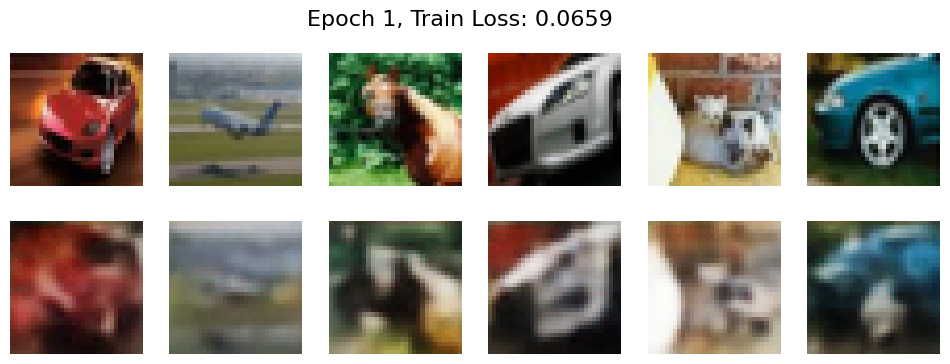
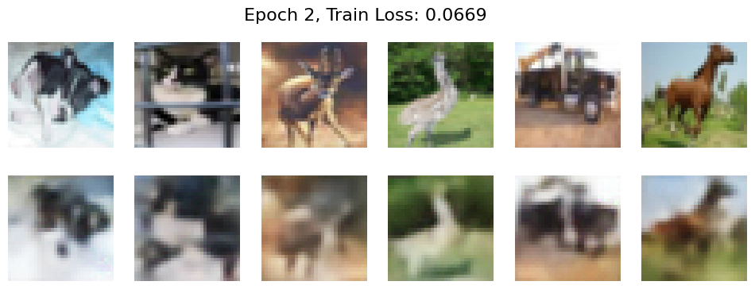
---------------------------------------------------------------------------
KeyboardInterrupt Traceback (most recent call last)
<ipython-input-74-2a90df774ea3> in <cell line: 3>()
1 # model = VQVAE(in_dim=3, hidden_dim=128, embed_dim=256, n_embedding=128).to(DEVICE)
2 optimizer = optim.Adam(model.parameters(), lr=1e-4)
----> 3 train(model, train_loader, optimizer, n_epochs=10, device=DEVICE)
<ipython-input-63-1a77779aa31a> in train(model, train_loader, optimizer, n_epochs, device, beta)
31 def train(model, train_loader, optimizer, n_epochs, device="cpu", beta=0.05):
32 for epoch in range(n_epochs):
---> 33 train_loss = train_epoch(model, train_loader, optimizer, device, beta)
34 plot_reconstructions(model, next(iter(train_loader))[0].to(device), title=f'Epoch {epoch+1}, Train Loss: {train_loss:.4f}')
<ipython-input-63-1a77779aa31a> in train_epoch(model, train_loader, optimizer, device, beta)
24 reconstruction_loss = F.mse_loss(out, X)
25 loss = reconstruction_loss + codebook_loss + beta * commitment_loss
---> 26 loss.backward()
27 optimizer.step()
28 train_loss += loss.item()
/usr/local/lib/python3.10/dist-packages/torch/_tensor.py in backward(self, gradient, retain_graph, create_graph, inputs)
523 inputs=inputs,
524 )
--> 525 torch.autograd.backward(
526 self, gradient, retain_graph, create_graph, inputs=inputs
527 )
/usr/local/lib/python3.10/dist-packages/torch/autograd/__init__.py in backward(tensors, grad_tensors, retain_graph, create_graph, grad_variables, inputs)
265 # some Python versions print out the first line of a multi-line function
266 # calls in the traceback and some print out the last line
--> 267 _engine_run_backward(
268 tensors,
269 grad_tensors_,
/usr/local/lib/python3.10/dist-packages/torch/autograd/graph.py in _engine_run_backward(t_outputs, *args, **kwargs)
742 unregister_hooks = _register_logging_hooks_on_whole_graph(t_outputs)
743 try:
--> 744 return Variable._execution_engine.run_backward( # Calls into the C++ engine to run the backward pass
745 t_outputs, *args, **kwargs
746 ) # Calls into the C++ engine to run the backward pass
KeyboardInterrupt:
X = next(iter(test_loader))[0][:36].to(DEVICE)
out, _, _ = model(X)
out = out.permute(0, 2, 3, 1).contiguous()
out = torch.clamp(out, 0, 1)
X = X.permute(0, 2, 3, 1).contiguous()
X = X.detach().cpu().numpy()
out = out.detach().cpu().numpy()
fig, ax = plt.subplots(6, 12, figsize=(12, 6))
for i in range(6):
for j in range(6):
ax[i, j * 2].imshow(X[i * 6 + j], cmap='gray')
ax[i, j * 2].axis('off')
ax[i, j * 2 + 1].imshow(out[i * 6 + j], cmap='gray')
ax[i, j * 2 + 1].axis('off')

torch.save(model.state_dict(), '/content/drive/MyDrive/Deep unsupervised learning/VAE/vqvae_cifar10.pth')
11.7. PixelCNN implementation#
class MaskedConv2d(nn.Module):
"""
Implementation of masked convolution layer assuming color channels are dependent
"""
def __init__(self, in_channels, out_channels, kernel_size, mask_type="A", device=DEVICE):
"""
@param in_channels, out_channels, kernel_size: int
@param mask_type
Accepts type "A" or "B" (see figure 1 and 2)
@ param device: string
"""
super(MaskedConv2d, self).__init__()
self.conv = nn.Conv2d(in_channels=in_channels, out_channels=out_channels, kernel_size=kernel_size, padding=(kernel_size - 1) // 2)
self.set_mask(kernel_size, mask_type, device)
def set_mask(self, kernel_size, mask_type, device):
"""
PixelCNN mask setup
"""
out_dim, in_dim = self.conv.weight.shape[:2]
self.mask = torch.ones(self.conv.weight.shape, device=device, requires_grad=False).float()
one_third_in_dim, one_third_out_dim = in_dim // 3, out_dim // 3
self.mask[:, :, 1 + kernel_size // 2:, :] = 0.0
self.mask[:, :, kernel_size // 2, 1 + kernel_size // 2:] = 0.0
self.mask[:one_third_out_dim, one_third_in_dim:, kernel_size // 2, kernel_size // 2] = 0.0
self.mask[one_third_out_dim:2*one_third_out_dim, 2*one_third_in_dim:, kernel_size // 2, kernel_size // 2] = 0.0
self.mask[2*one_third_out_dim:, 3*one_third_in_dim:, kernel_size // 2, kernel_size // 2] = 0.0
if mask_type == "A":
self.mask[:one_third_out_dim, :one_third_in_dim, kernel_size // 2, kernel_size // 2] = 0.0
self.mask[one_third_out_dim:2*one_third_out_dim, one_third_in_dim:2*one_third_in_dim, kernel_size // 2, kernel_size // 2] = 0.0
self.mask[2*one_third_out_dim:, 2*one_third_in_dim:3*one_third_in_dim, kernel_size // 2, kernel_size // 2] = 0.0
def forward(self, x):
"""
@param x: torch.tensor [B, C, H, W]
"""
self.conv.weight.data *= self.mask
return self.conv(x)
class ResidualBlock(nn.Module):
"""
Implementation of residual block with fixed mask type B
"""
def __init__(self, in_channels):
"""
@param in_channels: int
"""
super(ResidualBlock, self).__init__()
self.net = nn.Sequential(MaskedConv2d(in_channels=in_channels, out_channels=in_channels//2, kernel_size=1, mask_type="B"),
nn.ReLU(),
MaskedConv2d(in_channels=in_channels//2, out_channels=in_channels//2, kernel_size=7, mask_type="B"),
nn.ReLU(),
MaskedConv2d(in_channels=in_channels//2, out_channels=in_channels, kernel_size=1, mask_type="B"),
nn.ReLU())
def forward(self, x):
"""
@param x: torch.tensor [B, C, H, W]
"""
out = self.net(x)
return x + out
class PixelCNN(nn.Module):
"""
Implementation of PixelCNN for both grayscale and colored images
"""
def __init__(self, in_channels, hidden_channels, n_classes, n_layers, height, width, color_independent=True):
"""
@param in_channels, hidden_channels: int
@param n_classes: int
Number of output classes
@param n_layers: int
Number of Residual block layers
@param height, width: int
@param color_independent: boolean
True if assume color channels are independent (default True)
"""
super(PixelCNN, self).__init__()
self.net = [MaskedConv2d(in_channels, hidden_channels, kernel_size=7, mask_type="A"),
nn.BatchNorm2d(hidden_channels),
nn.ReLU()]
for _ in range(n_layers):
self.net.extend([ResidualBlock(hidden_channels),
nn.BatchNorm2d(hidden_channels),
nn.ReLU()])
self.net.append(MaskedConv2d(hidden_channels, in_channels*n_classes, kernel_size=1, mask_type="B"))
self.net = nn.ModuleList(self.net)
self.in_channels = in_channels
self.n_classes = n_classes
self.height = height
self.width = width
self.color_independent = color_independent
def forward(self, x):
"""
@param x: torch.tensor [B, C, H, W]
"""
x = (x.float() / (self.n_classes - 1) - 0.5) / 0.5
for layer in self.net:
x = layer(x)
if self.color_independent:
x = x.view(x.shape[0], self.n_classes, self.in_channels, x.shape[2], x.shape[3])
else:
x = x.view(x.shape[0], self.in_channels, self.n_classes, x.shape[2], x.shape[3]).permute(0, 2, 1, 3, 4)
return x
def sample(self, n_samples, device):
"""
@param n_samples: int
Number of samples to geneerate
@param device: string
"""
self.eval()
with torch.no_grad():
sample = torch.zeros(n_samples, self.in_channels, self.height, self.width).to(device).float()
for i in range(self.height):
for j in range(self.width):
for c in range(self.in_channels):
out = self.forward(sample)
logits = out[:, :, c, i, j]
prob = nn.Softmax(dim=1)(logits)
sample[:, c, i, j] = torch.multinomial(prob, 1).squeeze(-1)
sample = sample.detach().cpu()
return sample
11.8. Train the PixelCNN for generation#
def plot_samples(pixelcnn, vae, n_samples, device="cpu", title="Generated images"):
vae.eval()
samples = pixelcnn.sample(n_samples, DEVICE)
samples = samples.long().view(-1)
out = torch.index_select(vae.quantizer.dictionary, dim=0, index=samples.long().to(DEVICE))
out = out.view(n_samples, 8, 8, vae.embed_dim).permute(0, 3, 1, 2)
out = vae.decoder(out)
out = out.permute(0, 2, 3, 1).contiguous()
out = out.detach().cpu().numpy()
fig, ax = plt.subplots(1, 6, figsize=(12, 2))
fig.suptitle(title, fontsize=16)
for i in range(6):
ax[i].imshow(out[i], cmap="gray")
ax[i].axis('off')
plt.show()
def train_epoch(pixelcnn, vae, train_loader, optimizer, device='cpu'):
pixelcnn.train()
vae.eval()
train_loss = 0.0
for X, _ in train_loader:
X = X.to(device)
out = vae.encoder(X)
out, _, _, target = vae.quantizer(out) #[B, E, 8, 8], need [B, 8, 8] labels
target = target.unsqueeze(1)
out = pixelcnn(target)
optimizer.zero_grad()
loss = nn.CrossEntropyLoss()(out, target)
loss.backward()
optimizer.step()
train_loss += loss.item()
return train_loss
def train(pixelcnn, vae, train_loader, optimizer, n_epochs, device='cpu'):
for epoch in range(n_epochs):
train_loss = train_epoch(pixelcnn, vae, train_loader, optimizer, device)
plot_samples(pixelcnn, vae, 6, title=f'Epoch {epoch+1}, Train Loss: {train_loss:.4f}')
model = VQVAE(in_dim=1, hidden_dim=64, embed_dim=128, n_embedding=3).to(DEVICE)
model.load_state_dict(torch.load('/content/drive/MyDrive/Deep unsupervised learning/VAE/vqvae_mnist.pth'))
<All keys matched successfully>
prior = PixelCNN(in_channels=1, hidden_channels=64, n_classes=3, n_layers=3, height=8, width=8).to(DEVICE)
optimizer = optim.Adam(prior.parameters(), lr=1e-3)
optimizer = optim.Adam(prior.parameters(), lr=1e-4)
train(prior, model, train_loader, optimizer, n_epochs=20, device=DEVICE)
torch.save(prior.state_dict(), '/content/drive/MyDrive/Deep unsupervised learning/VAE/vqvae_pixelcnn_mnist.pth')
model.eval()
n_samples=36
samples = prior.sample(n_samples, DEVICE)
samples = samples.long().view(-1)
out = torch.index_select(model.quantizer.dictionary, dim=0, index=samples.long().to(DEVICE))
out = out.view(n_samples, 8, 8, 128).permute(0, 3, 1, 2)
out = model.decoder(out)
out = out.permute(0, 2, 3, 1).contiguous()
out = out.detach().cpu().numpy()
grid_size = int(np.sqrt(n_samples))
fig, axes = plt.subplots(grid_size, grid_size, figsize=(6, 6))
axes = axes.flatten()
for i in range(n_samples):
axes[i].imshow(out[i], cmap='gray')
axes[i].axis('off')
plt.subplots_adjust(wspace=0.1, hspace=0.1)
plt.show()

11.9. Train prior on Cifar10#
model = VQVAE(in_dim=3, hidden_dim=128, embed_dim=256, n_embedding=128).to(DEVICE)
model.load_state_dict(torch.load('/content/drive/MyDrive/Deep unsupervised learning/VAE/vqvae_cifar10.pth'))
<All keys matched successfully>
prior = PixelCNN(in_channels=1, hidden_channels=64, n_classes=128, n_layers=3, height=8, width=8).to(DEVICE)
optimizer = optim.Adam(prior.parameters(), lr=1e-3)
train(prior, model, train_loader, optimizer, n_epochs=20, device=DEVICE)
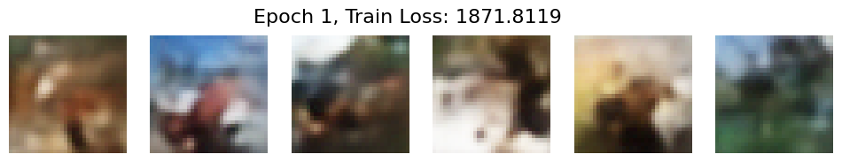
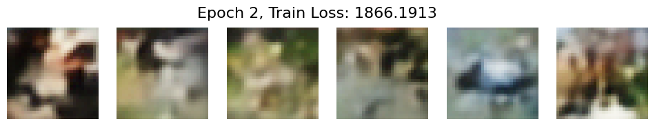
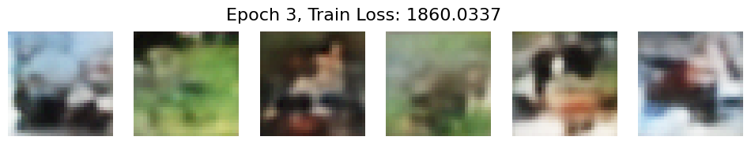
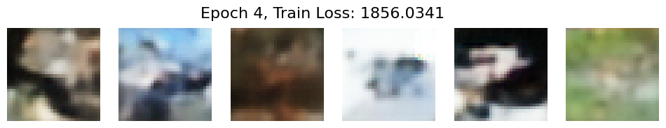
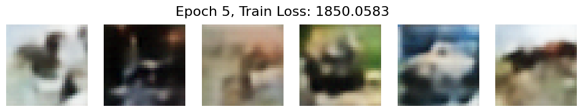
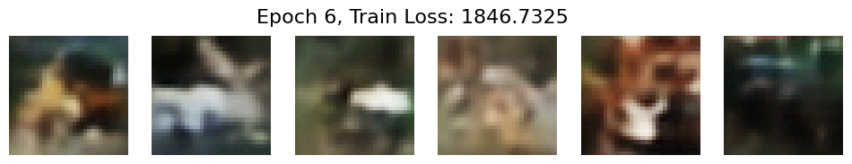
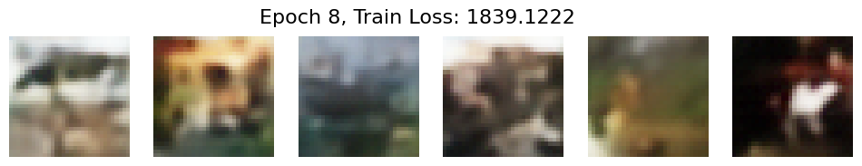
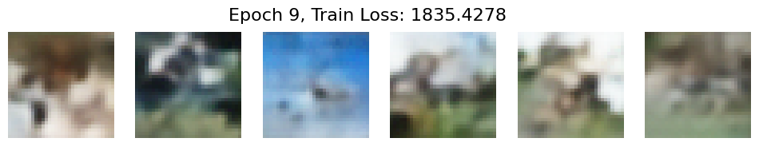
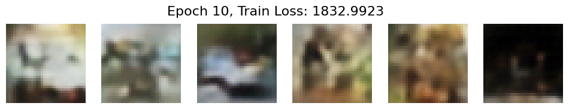
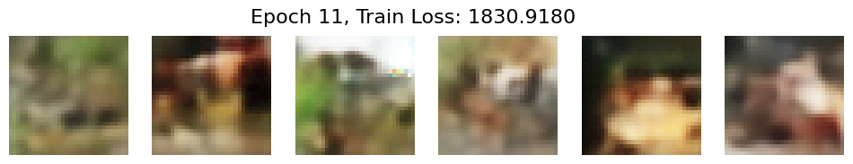
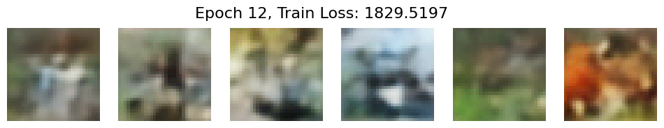
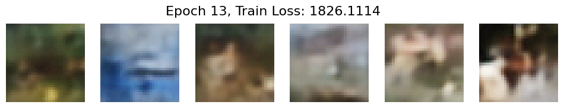
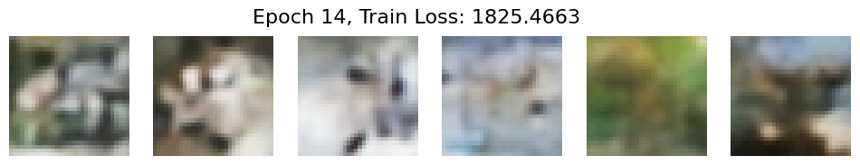
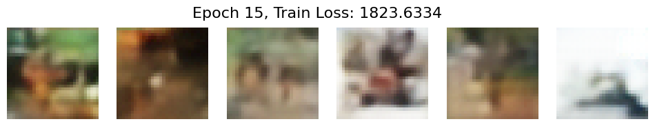
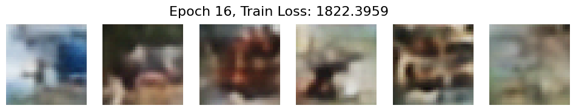

 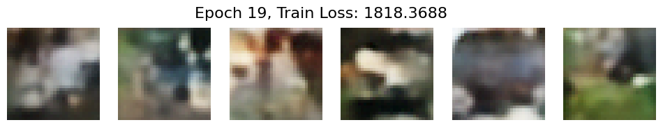
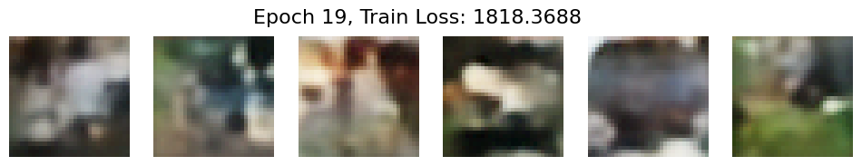
WARNING:matplotlib.image:Clipping input data to the valid range for imshow with RGB data ([0..1] for floats or [0..255] for integers).
WARNING:matplotlib.image:Clipping input data to the valid range for imshow with RGB data ([0..1] for floats or [0..255] for integers).
WARNING:matplotlib.image:Clipping input data to the valid range for imshow with RGB data ([0..1] for floats or [0..255] for integers).
WARNING:matplotlib.image:Clipping input data to the valid range for imshow with RGB data ([0..1] for floats or [0..255] for integers).
WARNING:matplotlib.image:Clipping input data to the valid range for imshow with RGB data ([0..1] for floats or [0..255] for integers).
WARNING:matplotlib.image:Clipping input data to the valid range for imshow with RGB data ([0..1] for floats or [0..255] for integers).
WARNING:matplotlib.image:Clipping input data to the valid range for imshow with RGB data ([0..1] for floats or [0..255] for integers).
WARNING:matplotlib.image:Clipping input data to the valid range for imshow with RGB data ([0..1] for floats or [0..255] for integers).
model.eval()
n_samples=36
samples = prior.sample(n_samples, DEVICE)
samples = samples.long().view(-1)
out = torch.index_select(model.quantizer.dictionary, dim=0, index=samples.long().to(DEVICE))
out = out.view(n_samples, 8, 8, model.embed_dim).permute(0, 3, 1, 2)
out = model.decoder(out)
out = torch.clamp(out, 0, 1)
out = out.permute(0, 2, 3, 1).contiguous()
out = out.detach().cpu().numpy()
grid_size = int(np.sqrt(n_samples))
fig, axes = plt.subplots(grid_size, grid_size, figsize=(6, 6))
axes = axes.flatten()
for i in range(n_samples):
axes[i].imshow(out[i], cmap='gray')
axes[i].axis('off')
plt.subplots_adjust(wspace=0.1, hspace=0.1)
plt.show()

torch.save(prior.state_dict(), '/content/drive/MyDrive/Deep unsupervised learning/VAE/vqvae_pixelcnn_cifar10.pth')